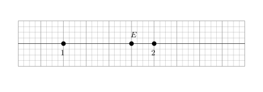
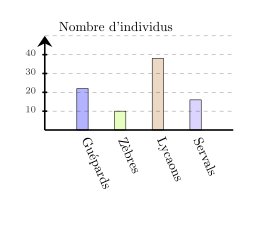
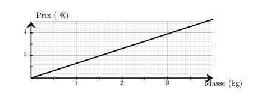
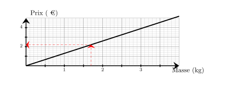
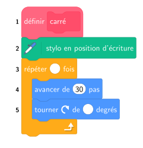

Dans une association de 300 membres, $25\%$ des membres ont une taille supérieure à 1,75 m.
Combien de membres ont une taille supérieure à 1,75 m ?
Le nombre de membres qui ont une taille supérieure à 1,75 m est égal à :
$300 \times \dfrac{25}{100} = \dfrac{7\,500}{100}={\color{#F15929}\boldsymbol{75}}$.
Exercice 2
Sur chaque droite graduée, déterminer l’abscisse du point $E$.
A. $\dfrac{13}{8}$
B. $\dfrac{17}{8}$
C. $\dfrac{7}{4}$
D. $\dfrac{3}{2}$

On remarque qu'il y a 4 divisions entre $1$ et $2$, donc chaque division vaut $\dfrac{1}{4}$.
Le point $E$ est situé après $7$ divisions à partir de l'origine.
Donc l'abscisse de $E$ est $\dfrac{7}{4}$.
Bonne réponse : C.
Exercice 3
Calculer l'aire d'un disque de rayon $2\text{ cm}$
$\mathcal{A}_\text{disque} = r \times r \times \pi$ $\mathcal{A}_\text{disque} = 2\text{ cm} \times 2\text{ cm} \times \pi$ $\mathcal{A}_\text{disque} = {\color{#F15929}\boldsymbol{4\pi}}\text{ cm}^2$
Exercice 4
Parmi les 4 réponses ci-dessous, une seule est correcte.
Donner la lettre correspondante. Une voiture roule à $100$ km/h. Combien de temps met-elle pour parcourir $110$ km ?
A. 1 h 06 min
B. 1 h 38 min 60 s
C. 33 min
D. 2 h 12 min
Pour parcourir $110$ km à $100$ km/h, il faut :
$\dfrac{110}{100}\text{h}=\dfrac{11}{10}\text{h}=\dfrac{10}{10}+\dfrac{1}{10}\text{h}=1+\dfrac{1}{10}\text{h}={\color{#F15929}\boldsymbol{1\mathbf{h }06\mathbf{ min}}}$.
La bonne réponse est la réponse A.
Séance 74
Exercice 1
Donner l'écriture décimale de $3{,}32 \times 10^{-1}$.
Il est indiqué sur la bouteille de nettoyant pour sol qu'il faut $48$ cL de nettoyant pour sol pour $6$ L d'eau. On veut utiliser $7$ L d'eau. Quel volume de nettoyant pour sol doit-on prévoir ?
Commençons par trouver combien est-ce qu'il faut de nettoyant pour sol pour $1$ L d'eau. 6 L d'eau, c'est ${\color{#216D9A}\boldsymbol{6}}$ fois $1$ L d'eau. Pour $1$ L d'eau, il faut donc ${\color{#216D9A}\boldsymbol{6}}$ fois moins que $48$ cL. $48$ cL $\div {\color{#216D9A}\boldsymbol{6}} = 8$ cL il faut ${\color{#216D9A}\boldsymbol{8}}$ cL de nettoyant pour sol pour $1$ L d'eau. Cherchons maintenant la quantité nécessaire pour $7$ L d'eau. $7$ L d'eau, c'est ${\color{#216D9A}\boldsymbol{7}}$ fois $1$ L d'eau. Il faut donc ${\color{#216D9A}\boldsymbol{7}}$ fois plus de nettoyant pour sol que $8$ cL : ${\color{#216D9A}\boldsymbol{8}}$ cL $\times {\color{#216D9A}\boldsymbol{7}} = 56$ cL il faut prévoir ${\color{#F15929}\boldsymbol{56}}$ cL de nettoyant pour sol.
Exercice 3
Donner le nom de chacun des solides.
Pyramide avec une base ayant $5$ sommets.
Exercice 4
Dans le parc naturel de Genser, il y a beaucoup d'animaux. Voici un diagramme qui représente les effectifs de quelques espèces.
a. Quelle est l'espèce la moins nombreuse ?
$\square\;$ Servals $\square\;$ Lycaons $\square\;$ Guépards $\square\;$ Zèbres
b. Quelle est l'espèce la plus nombreuse ?
$\square\;$ Servals $\square\;$ Lycaons $\square\;$ Guépards $\square\;$ Zèbres
c. L'espèce la plus nombreuse représente ...
$\square\;$ Plus de la moitié des animaux $\square\;$ La moitié des animaux $\square\;$ Moins de la moitié des animaux

a. L'animal le moins nombreux parmi ces espèces est :
$\square\;$ Servals $\square\;$ Lycaons $\square\;$ Guépards $\blacksquare\;$ Zèbres
b. L'animal le plus nombreux parmi ces espèces est :
$\square\;$ Servals $\blacksquare\;$ Lycaons $\square\;$ Guépards $\square\;$ Zèbres
c. L'animal le plus nombreux parmi ces espèces représente :
$\square\;$ Plus de la moitié des animaux $\square\;$ La moitié des animaux $\blacksquare\;$ Moins de la moitié des animaux
Séance 75
Exercice 1
Compléter le tableau en mettant oui ou non dans chaque case. $$\begin{array}{|l|c|c|c|c|}
\hline
\text{... est divisible} & \text{par }2 & \text{par }3 & \text{par }5 & \text{par }9\\
\hline
4\,626 & & & & \\
\hline
\end{array}$$
Sur le graphique ci-dessus, on a représenté le prix en euros en fonction de la masse en kilogrammes de bananes achetés. Quel est le prix à payer pour l'achat de $1{,}7$ kg de bananes ?

Le prix à payer pour l'achat de $1{,}7$ kg de bananes est de ${\color{#F15929}\boldsymbol{2{,}20}}$ €.

Exercice 3
$1$ $\ldots$ = $24$ heures
$1$ jour = $24$ heures
Exercice 4
Une élève souhaite réaliser un programme pour dessiner un carré.
Par quelles valeurs doit-elle compléter les lignes 3 et 5 ?

Pour obtenir un carré, il faut répéter ${\color{#F15929}\mathbf{4}}$ fois
et tourner de $\dfrac{360}{4} = {\color{#F15929}\mathbf{90}}$ degrés.